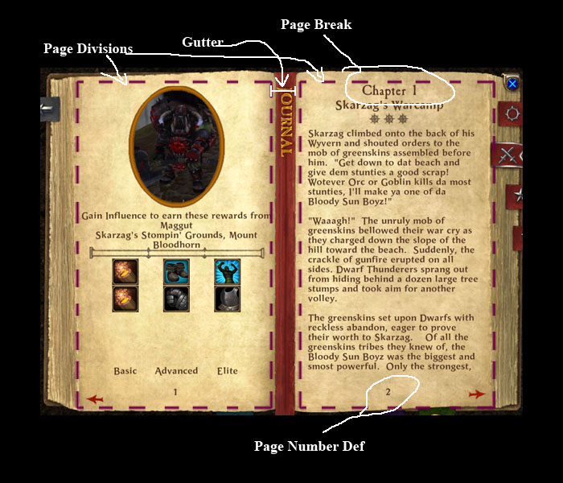

The PageWindow provides an automated display for creating a book-like layout.
| PageWindow | The PageWindow provides an automated display for creating a book-like layout. |
| Implementation Details | The PageWindow is a specialized window element that automatically separates a long vertical organization of windows (like you would create for a ScrollWindow out into page-sized sections. |
| XML Definition | This is the PageWindow xml definition. |
| XML Tag | |
| Required Attributes | You need to specify valid values for all of these elements to get the PageWindow to create properly. |
| pagesdisplayed | The number of pages to display. |
| guttersize | The gutter distance between each page. |
| childcontentswindow | Name of the child Window that contains all of the windows to be parsed into pages. |
| Optional Attributes | These attributes are optional. |
| pagenumbertemplate | Name of a valid Label defintion to use for the page numbers. |
| Functions | |
| Functions | |
| PageWindowGetNumPagesDisplayed() | Returns the number of pages that this page window will display at once. |
| Functions | |
| Functions | |
| PageWindowGetNumPages() | Returns the number of pages currently parsed from the childcontentswindow. |
| PageWindowSetCurrentPage() | Sets the left most page on the display. |
| PageWindowGetCurrentPage() | Returns the index of the current left-most page. |
| PageWindowUpdatePages() | Processes all of the child windows to update the page layout. |
| PageWindowClearPageBreaks() | Clears out all registered Page-Break windows. |
| PageWindowAddPageBreak() | Adds a new Page-Break window. |
| PageWindowRemovePageBreak() | Removes the Page-Break for a specific window. |
| PageWindowClearSplitableWindows() | Clears out all registered Splitable windows. |
| PageWindowAddSplitableWindow() | Adds a new Splittable window. |
| PageWindowRemoveSplitableWindow() | Removes the splittable flag for a specific window. |
The PageWindow is a specialized window element that automatically separates a long vertical organization of windows (like you would create for a ScrollWindow out into page-sized sections.
Each page is parsed out by determing which child-window elements will fit entirely on that page. Anything hanging off the bottom will be pushed to the top of the next page. You can also designated specific window elements as ‘page breaks’, so that they will always begin at the top of a page.
There are two exceptions to this logic.
When a Label hangs off the edge of the page, will split the text a cross multiple pages as needed to produce a book-like layout.
If you explictly specify a window as ‘splitable’ by calling PageWindowAddSplitableWindow(), the definition that window will be duplicated so it is shown across all pages. NOTE Currently this only cause the window definition to be duplicated, and only the size and position information a transfered to the new window. This is not a true clone.
To create a PageDisplay, you can specify the follow general settings.
The width of each page is dermined from the number of pages displayed, the gutter size, and the window width.
pageWidth = windowWidth / ( pagesDisplayed - gutterSize*(pagesDisplayed-1) )

This is the PageWindow xml definition.
| XML Tag | |
| Required Attributes | You need to specify valid values for all of these elements to get the PageWindow to create properly. |
| pagesdisplayed | The number of pages to display. |
| guttersize | The gutter distance between each page. |
| childcontentswindow | Name of the child Window that contains all of the windows to be parsed into pages. |
| Optional Attributes | These attributes are optional. |
| pagenumbertemplate | Name of a valid Label defintion to use for the page numbers. |
You need to specify valid values for all of these elements to get the PageWindow to create properly.
| Functions | |
| PageWindowGetNumPagesDisplayed() | Returns the number of pages that this page window will display at once. |
Returns the number of pages that this page window will display at once.
| pageWindowName | (string) The name of the PageWindow. |
| numPagesDisplayed | (number) The number of pages displayed at once. |
local numPagesDisplayed = PageWindowGetNumPagesDisplayed( pageWindow )
| Functions | |
| PageWindowGetNumPages() | Returns the number of pages currently parsed from the childcontentswindow. |
| PageWindowSetCurrentPage() | Sets the left most page on the display. |
| PageWindowGetCurrentPage() | Returns the index of the current left-most page. |
| PageWindowUpdatePages() | Processes all of the child windows to update the page layout. |
| PageWindowClearPageBreaks() | Clears out all registered Page-Break windows. |
| PageWindowAddPageBreak() | Adds a new Page-Break window. |
| PageWindowRemovePageBreak() | Removes the Page-Break for a specific window. |
| PageWindowClearSplitableWindows() | Clears out all registered Splitable windows. |
| PageWindowAddSplitableWindow() | Adds a new Splittable window. |
| PageWindowRemoveSplitableWindow() | Removes the splittable flag for a specific window. |
Returns the number of pages currently parsed from the childcontentswindow.
| pageWindowName | (string) The name of the PageWindow. |
| numPages | (number) The number of pages currently in the display. |
local numPages = PageWindowGetNumPages( pageWindow )
Sets the left most page on the display.
| pageWindowName | (string) The name of the PageWindow. |
| curPage | (number) The index number for the left most page. |
| nil | no return value. |
PageWindowSetCurrentPage( "SomePageWindow", 1 )
Returns the index of the current left-most page.
| pageWindowName | (string) The name of the PageWindow. |
| curPage | (number) The index number for the left most page. |
local curPage = PageWindowGetCurrentPage( "SomePageWindow" )
Processes all of the child windows to update the page layout.
| pageWindowName | (string) The name of the PageWindow. |
| nil | no return value. |
PageWindowUpdatePages( "SomePageWindow" )
Clears out all registered Page-Break windows.
| pageWindowName | (string) The name of the PageWindow. |
| nil | no return value. |
PageWindowClearPageBreaks( "SomePageWindow" )
Adds a new Page-Break window. This window will always be displayed at the top of a page.
| pageWindowName | (string) The name of the PageWindow. |
| pageBreakWindowName | (string) The name of a child window of the childcontentswindow. |
| nil | no return value. |
PageWindowAddPageBreak( "SomePageWindow", "ChapterTwoHeading" )
Removes the Page-Break for a specific window.
| pageWindowName | (string) The name of the PageWindow. |
| pageBreakWindowName | (string) The name of a child window of the childcontentswindow. |
| nil | no return value. |
PageWindowRemovePageBreak( "SomePageWindow", "ChapterTwoHeading" )
Clears out all registered Splitable windows.
| pageWindowName | (string) The name of the PageWindow. |
| nil | no return value. |
PageWindowClearSplitableWindows( "SomePageWindow" )
Adds a new Splittable window. When this window overhangs the page, it will duplicated so that it split between the pages rather than pushed to the next page.
| pageWindowName | (string) The name of the PageWindow. |
| spilableWindowName | (string) The name of a child window of the childcontentswindow. |
| nil | no return value. |
PageWindowAddSplitableWindow( "SomePageWindow", "SomeTextBorder" )
Removes the splittable flag for a specific window.
| pageWindowName | (string) The name of the PageWindow. |
| splitableWindowName | (string) The name of a child window of the childcontentswindow. |
| nil | no return value. |
PageWindowRemoveSplitableWindow( "SomePageWindow", "SomeTextBorder" )